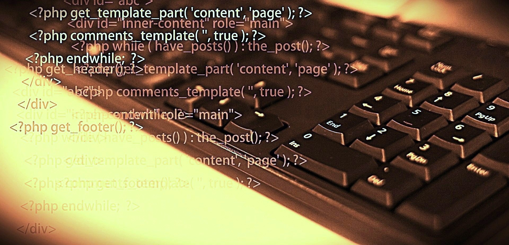
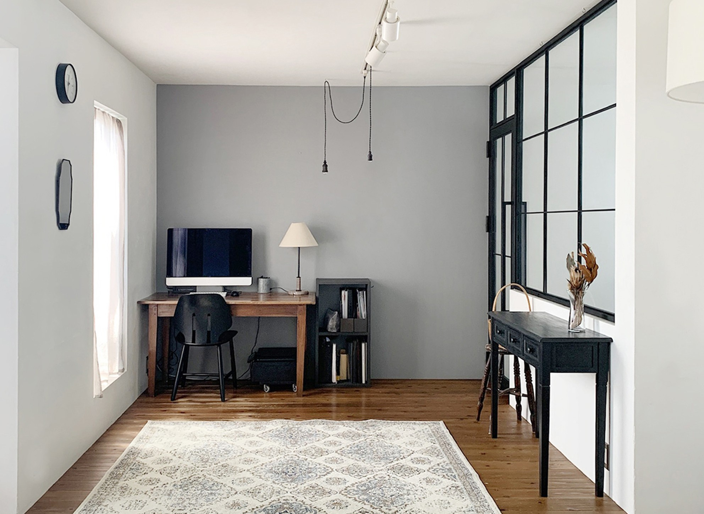

～使用可能なスキル～
- Python(アプリ開発)
- HTML(ホームページ作成)
- CSS
- Javascript
- SQL
- Illustrator(デザイン、プロトタイプ作成)
- Photoshop
- Inkscape
- Figma
- Word(社内外資料作成)
- Excel
- PowerPoint
現在の時刻が表示されます。





美容師専門学校を卒業。趣味は筋トレ、サッカー、美味しいもの食べる、散歩、音楽。King Nueが好き。デザインの業務に携わりながら、2024年11月頃から本格的にプログラミング独学開始。WEBデザイン、Webエンジニアに興味がある36歳。WEBデザイン、フロントエンド、バックエンドを担える人材を目指しています。プログラミングはPython、HTML、CSS、Javascript、SQLを学んでいます。IT系の企業に3年間勤めており、主にデザイン作成のグラフィックデザイナーとして業務を行ってきました。チラシ、パンフレット、Lineスタンプ、ロゴマーク、名刺などのデザインを手掛けましたが、特にチラシのオシャレなレイアウト作成が得意です。パーソナルジムの案内チラシ案件ではクライアント様に高く評価していただき、自信になりました。そんな中PCスキルの幅を広げていこうと思い、Progateでプログラミングの基礎を学びLv.217になりました。現在、デザイン作成可能なエンジニアとしてIT企業への就職を目指してポートフォリオの作成に取り組んでいます。この記事は、私がWebエンジニアへの転職を目指す過程において作成したポートフォリオの紹介記事です。ポートフォリオの概要や工夫点、アプリ開発などを行う上で苦労した点などをこちらに書かせていただいております。また、独学でどのように学習してきたのかもこちらに書かせていただいたので、ご参考程度に見ていただけると嬉しく思います。以下は私のプロジェクトです。
～使用可能なスキル～


ーアプリ開発Python(tkinter)ー
プログラミングを勉強して初めて開発したアプリです。
ネットにあるサンプルコードを写して、難易度の低いプ
ロジェクトから作成しました。
当初AI開発に興味があり、Pythonに特化した人材を目指
してましたが、今後はPythonでのバックエンドの技術追
求を考えています。


ユーザーインターフェース（UI）:Tkinterライブラリを使用してUIを作成しています。このライブラリはシンプルで初心者に最適です。主な要素には、メモの表示領域、入力フィールド、ボタン（例えば保存、削除、編集など）が含まれます。メモの保存と管理:入力されたメモを保存する機能。データをファイルやデータベースに保存する設計が可能です。すでに存在するメモの編集や削除機能も含めることで、実用性を高めています。動的なイベント処理:bind()などを使用して、ボタンや入力フィールドがユーザーの操作に応じて正しく動作する仕組みを構築できます。


入力機能：ユーザーは数字や演算子（例：+、-、×、÷）を入力できます。これは通常、数字ボタンや演算子ボタンのクリックで実現されます。入力されたデータは、計算処理のために保存されます。演算処理入力された数値と演算子に基づいて計算が実行されます。Pythonのeval関数を使用して計算を効率的に処理します。結果表示計算結果を画面上のラベルやテキストエリアに表示します。ユーザーが追加計算を行いたい場合、入力を続けられるようになっています。クリア機能入力されたデータをすべてリセットし、電卓を初期状態に戻します。GUIレイアウトTkinterライブラリを使用して、ボタン、入力フィールド、結果表示のレイアウトを作成します。コードの構成は、ライブラリのインポートTkinterをインポートして、ウィンドウやウィジェットを作成するための準備を行います。メインウィンドウの作成TkinterのTkクラスを使用して、電卓アプリのメインウィンドウを作成します。titleメソッドでウィンドウタイトルを設定。ウィジェットの作成は、入力フィールド: Entryウィジェットを使用して、ユーザーの入力値を受け取ります。ボタン: 数字や演算子を入力するためのButtonウィジェットを作成します。各ボタンは適切なクリックイベント処理を持っています。イベント処理ユーザーがボタンをクリックしたときの動作を関数で定義します。例えば、数字ボタンを押すと、その数字が入力フィールドに追加されます。=ボタンを押すと演算処理が実行されます。ウィジェットの配置は、Tkinterのgridメソッドを使用して、ボタンや入力フィールドを適切な位置に配置します。


時間の計測開始：ユーザーがスタートボタンをクリックすると、現在時刻を基準として計測が開始されます。start()関数で計測スタートを制御し、計測時間を記録します。時間の表示：計測中の時間がラベルに定期的に更新されます。after()メソッドを使って、短い間隔で時間を更新し、リアルタイムに表示します。計測停止：ストップボタンが押されると、計測が終了し、時間表示の更新も停止します。stop()関数内でラベルの表示を固定します。計測のリセット：必要に応じて計測をリセットし、最初の状態に戻す機能が含まれています。コード構成は、ライブラリのインポート：Tkinterを使用してGUIを構築します。必要に応じてtimeモジュールをインポートします。メインウィンドウの作成：TkinterのTkクラスをインスタンス化して、メイン画面を作成します。アプリのタイトルやサイズもここで設定します。ラベルとボタンの作成：ラベルは時間を表示するためのGUI要素です。ボタンは計測の開始、停止、リセットなどの操作を受け取ります。計測の開始と停止：start()関数で現在時刻を取得し、計測を開始します。stop()関数で計測時間の更新を停止し、現在の時間を表示したままにします。時間の更新処理：after()メソッドを用いて、ラベルの時間を一定間隔で更新します。ストップウォッチのリアルタイム性を実現します。メインループの実行：Tkinterのメインループを開始して、アプリを稼働させます。


基本機能は、タスクの追加：入力欄（Entryウィジェット）を使用して、新しいタスクを入力します。ボタンをクリックするとタスクがリストに追加されます。タスクの削除：リスト内の選択したタスクを削除できます。ユーザーはリストボックスで削除対象のタスクを選び、ボタンを押すことで実行します。タスクの一覧表示：リストボックスに現在のタスクリストを表示します。新しいタスクが追加されたり削除された場合、リストボックスを更新して表示します。データの保存と読み込み：JSON形式でタスクのデータを保存し、アプリを閉じた後も情報を保持できます。起動時に保存されたデータを読み込む機能があります。ユーザーインターフェース（UI）：Tkinterを使用して、直感的で使いやすいGUIを提供します。リスト表示、ボタン操作、入力欄の配置が特徴です。コード構成は、ライブラリのインポート：Tkinterを使用してGUIを作成します。JSONのデータ操作に必要なjsonモジュールもインポートします。メインウィンドウの作成：TkinterのTkクラスを使用して、ウィンドウを作成します。タイトルやサイズを設定してアプリの外観を整えます。入力欄とボタンの作成：入力欄（Entry）は新しいタスクを受け付けます。追加、削除ボタンはユーザーがタスクを操作するためのものです。リストボックスの作成：現在のタスクリストを表示する領域を作成します。タスク管理ロジック：add_task関数で新しいタスクを追加し、delete_task関数で選択したタスクを削除します。データ操作を効率的に行うため、JSONを活用してタスクリストを保存します。データの保存と読み込み：アプリケーション終了時にタスクをJSONファイルに保存し、次回起動時に読み込む機能を追加します。アプリケーションの起動：メインループを開始して、GUIを表示します。
ーホームページ(フロントエンド)ー
HTML、CSS、Javascriptでのホームページ作成を行いま
した。
フロントエンドのみの作成になっていて、バックエンドは
未対応です。今後、バックエンドとWEB周りの知識を深め、
クリエイティブなデザインからシステムの基盤構築までを
兼ね備えた総合的なエンジニアを目指しています。


ポートフォリオサイトは、プログラミング技術とデザインの創造力が融合した作品であり、作者が自身のキャリアやスキル、成果を効果的に表現しています。サイトの構成として、自己紹介セクション:作者の背景や経験を紹介し、簡単な趣味紹介や美容師専門学校卒業からプログラミング独学開始までの流れなどを紹介しています。プロジェクトセクション:Pythonを活用した数当てゲーム、Tkinterで作成した電卓アプリやストップウォッチなど、これまでに開発したアプリが掲載されています。プロジェクトは、Pythonでのアプリ開発、プログラミングホームページ作成、パンフレット・チラシデザインがあり、各プロジェクトには技術的なポイントやコードの概要が解説されており、読者が作者のスキルレベルを具体的に把握できます。お問い合わせセクション:簡潔なフォームがあり、連絡が取れる手段が提供されています。ポートフォリオサイトのデザインの特徴は、HTML、CSS、Javascriptを駆使して、シンプルながらも直感的なナビゲーションを意識し、視覚的に美しく、情報の整理が行き届いたレイアウトが特徴。配色やフォントの選び方が統一感を持たせ、全体の完成度を高めました。また、ヘッダー部分の画像はフェードイン・フェードアウトを使いさまざまな画像を移り変わっていくように設定し、デザイン性や芸術性と深みを出すことを意識し、あえて個性的な世界観を表現しました。

ーグラフィックデザインー
Inkscape、Illustrator、Photoshopを使用してデザイン作成し、
3年間ほど基礎を学びました。
視覚的に楽しく、読み手の目を引く設計です。
今後はIllustrator、Photoshopを中心に、WEBデザインに経験を最
大限に活かしていきたいと考えています。


インクスケープを活用して制作されたLINEスタンプは、独自の魅力が詰まったクリエイティブな作品です！例えば、秋田柴犬雑種やポメラニアンなど、犬種ごとの個性豊かなデザインがスタンプとしてラインアップされています。これらのスタンプは、日常会話をさらに楽しくするためのアイテムとして人気を集めています。スタンプの特徴としては、表情豊かなキャラクターと細部まで丁寧に描かれたデザインが挙げられます。インクスケープというベクターグラフィックソフトを使用して制作されているため、イラストがシャープで高品質。視覚的にもインパクトがあり、使うたびに笑顔を届けてくれると思います。「秋田柴犬雑種Lineスタンプ」「ポメラニアンLineスタンプ」など、友達や家族との会話を盛り上げるユーモラスな表現が含まれており、リラックスした雰囲気を楽しむことができます。LINEストアにて購入可能で、使い勝手抜群です。特に犬好きの方にはぴったりな作品に仕上げました。


インクスケープを利用して作成されたパンフレットやチラシは、クリエイティブな視点と実用性が融合した作品です。特にデザインの柔軟性と高い表現力を持つこのソフトウェアは、プロのグラフィックデザイナーから趣味での利用者まで幅広く活用されています。インクスケープでのデザインの特徴として、ベクター形式での編集:インクスケープは、ベクターデータを扱うため、デザインを高解像度で保存可能です。拡大縮小しても画質が劣化しないので、パンフレットやチラシには最適です。カスタムフォントやスタイル:フォントの種類やサイズ、文字間隔など細かい調整が簡単で、特にタイトルやキャッチコピーにインパクトを与えることができます。画像やグラフィックの挿入写真やイラストを簡単に組み込むことができ、視覚的に豊かな表現が可能。背景デザインやアイコンを駆使して読み手の注意を引く工夫ができます。レイヤー機能:レイヤーを利用することで、複数の要素を整理しながらデザインを進められます。例えば、背景、テキスト、画像を別々に管理することで効率的な編集が可能です。パンフレットやチラシ制作においては、企業案内や商品プロモーション:例えば、新商品を紹介するチラシでは、商品の特長を色鮮やかなグラフィックとともに強調するデザインを作成。イベント案内:研修医交流会の案内チラシなど、日時や場所を視覚的に分かりやすく配置。サービス情報:パーソナルジムの案内では、適切なレイアウトと写真を活用して、読み手に具体的なイメージを提供。これまで手がけた作品はどれも、チラシデザインを細かいディテールで仕上げることで高い視認性と集客効果を実現しています。
単純にお金がかかるからという理由もありますが、なぜスクールに通わずに独学での学習をえらんだのかについて、下記2点の理由があります。
①実務を想定した開発
新しい技術に触れるときや、実装の仕方がわからなくなったときは、まずは公式ドキュメントに目を通しました。難しい言い回しや技術用語が列挙しており少々読みづらいですが、事前知識として先にわからない用語を調べ、それから公式ドキュメントに戻るようにして、読み慣れるように努力しました。
エラーメッセージがでたときは、目を通して理解するようにしました。読んでも理解できないときは翻訳して内容を大まかに理解したあと、エラーの特定に移行するようにしました。その時に頭の中で、こうしたからこのようなエラーがでたのではないか、と自分の中で仮説を立てていました。そうすることで、エラー原因を特定できたときの理解度が上がり、「なんとなく直したらうまく動いた」という状況を回避できます。
わからない場合や、エラーが発生したときなどは、コードをそのままChatGPTやCopilotにかけて、参考にしました。エラーの原因やコードの間違いなどを効率よく特定することができました。
②目標を設定し、スケジュールを立てて開発する
1週間の作業内容をざっくりと考えてから学習・開発を進めました。また、目標達成度がどのくらいであるか、自分なりに振り返り、明日進めるタスクを割り出してから寝るように心掛けました。特に独学での学習なので、スケジュール計画と進捗管理を意識して学習・開発を進めました。
③YoutubeでLiveや解説動画で学ぶ
Youtubeでプログラミングの実践や解説している動画で視覚的に勉強することで、イメージを作りやすくしました。隙間時間でも学習することができるし、見流すだけでいいので手軽に続けることができました。プログラミングの全体像をざっくり掴むことができたので迷いすぎずに勉強を進めることができたと思います。
コードの書き方に関してはProgateで学習しましたが、アプリ開発を通じてまだまだわかっていないことだらけだなと感じました。基本的にネットから拾ったサンプルコードやAIに生成してもらったコードを元に、カスタムして必要な機能を追加していく形で作成しましたが、ゼロから自分でコードを書いていくことはできず、自分でコードを組み立てて考えることもできないので、今後も開発を続けてしっかりと技術の向上をしていきたいと思います。
今回の開発では、ポートフォリオの完成を優先的に行ってきたため、ゼロからコードを書いて理解を深めたり追求したりといったことにあまり時間を割けませんでした。今後は一つ一つの技術追求を深めていき、より実践的な実装に向けて学習していきたいと思います。
Youtubeなどで学習しましたが、わからないことが多かったです。コードを書くことだけでなく、土台となる全般的な知識をもっと学習し基礎固めをしていくことで、より質の高いアプリ開発ができるエンジニアを目指します。
職場の周りの人たちに開発したアプリを見せ、感想や改善点を出してもらいました。以下に、改善点の一部を抜粋します。
・色が見えづらいので修正すべき。
・電卓アプリ、メモアプリ等、オシャレな見た目のほうがいい。
・電卓アプリでは、平均値やMAX、MINなどもできるとおもしろい。
質問する力が大事、とよく言われますが、自分で調べて解決する力はついてきたと思いますが、エンジニアの方に質問し教えてもらって学んでいく力もとても大事だと思います。今後実務に入ったときに、適切なタイミング、質問方法に慣れていきながら学べるように意識していくことが課題です。
ネットワーク、セキュリティ、Web技術、テストコードなど、全般的な知識をもっと学習していき、優れたアプリの開発を目指していきたいと思います。